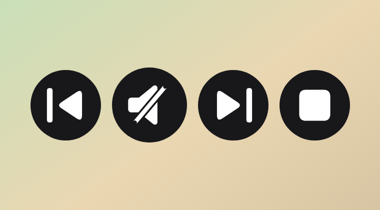

Song Player
One transparent circle that follows the visual’s width and height. A music note shows while a song plays, and a mute mark shows while it is stopped. Color, extra buttons, and auto play are set in the Power BI format pane.
Report view

Use it in a report
- In Power BI Desktop, open the Visualizations pane, choose Get more visuals (
...), then Import a visual from a file. - Select
songPlayer.pbiviz(version 1.6.0.0) and add Song Player to the page. - Drag the column of direct audio URLs into Song URL.
- Open the visual format pane and set Circle > Color. Under Circle > Design, choose Filled icon or Border line icon.
- Under Playback, turn on Previous, next, and stop, Same size, or Auto play when you want them.
- Under General > Effects, turn Background and Visual border off. Those belong to Power BI’s container. With them off, report view shows only the circles.
- Click the circle to play. Click it again to pause. The circle shows a music note while playing and a mute mark while stopped.
Song values need to be direct http or https audio links, such as .mp3, .wav, .ogg, or .m4a. When Power BI asks for web access, choose Allow.
Example data
songs.csv is a three-song table. Use Get data > Text/CSV, then drag Song URL into the visual. The files are SoundHelix example tracks, so the links point at the audio itself.